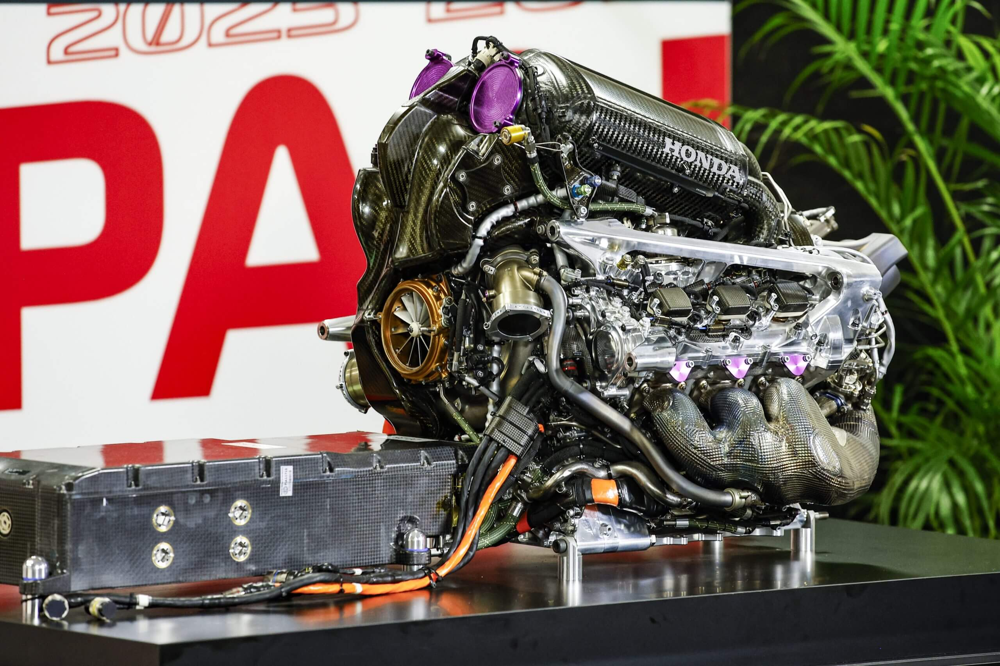
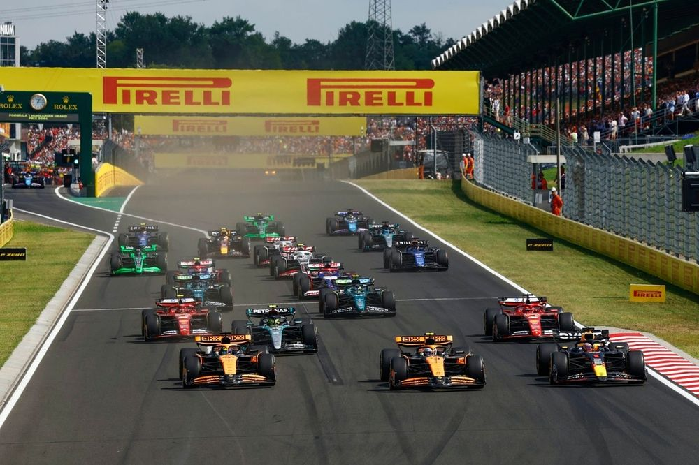
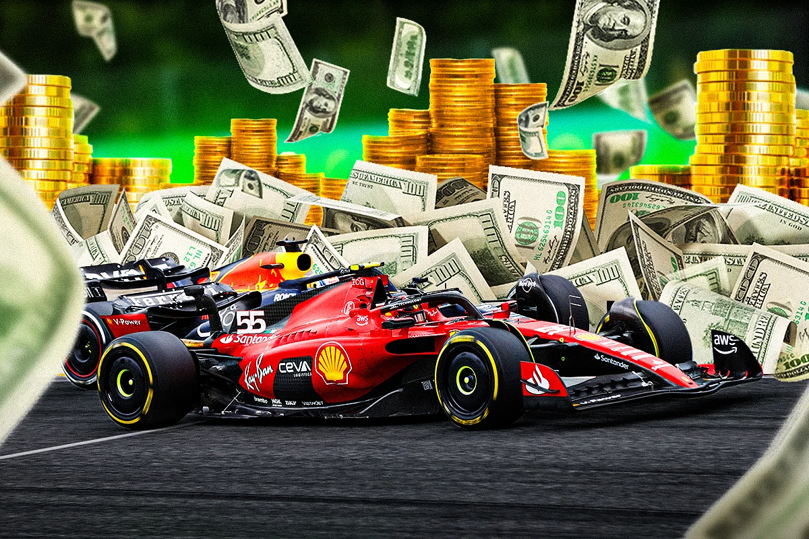

FIA

De Fédération Internationale de l’Automobile (FIA) is de overkoepelende organisatie die verantwoordelijk is voor het bestuur van de Formule 1 en vele andere autosportklassen. De FIA stelt de regels op, waaronder de technische, sportieve, financiële en veiligheidsvoorschriften, en zorgt ervoor dat deze door alle teams en coureurs worden nageleefd. Tijdens raceweekenden houden officials en stewards toezicht en grijpen zij in wanneer regels worden overtreden. Daarnaast speelt de FIA een belangrijke rol in het verbeteren van de veiligheid en het ontwikkelen van de sport op lange termijn. Door voortdurend regels aan te passen en te controleren, zorgt de FIA ervoor dat de Formule 1 eerlijk, competitief en zo veilig mogelijk blijft.
Technische regels in de Formule 1

De technische regels in de Formule 1 bepalen aan welke eisen de auto’s moeten voldoen en vormen daarmee de basis voor een eerlijke en gecontroleerde competitie. In deze regels staat precies vastgelegd hoe groot en zwaar een auto mag zijn, welke onderdelen verplicht zijn en hoe systemen zoals de motor en de hybride technologie mogen functioneren. Ook wordt strikt gecontroleerd hoeveel invloed teams mogen uitoefenen op aerodynamica, zodat er grenzen zijn aan de prestaties en kosten. Daarnaast schrijven de regels voor welke materialen gebruikt mogen worden en hoe veilig de constructie van de auto moet zijn. Door deze duidelijke richtlijnen worden extreme verschillen tussen teams beperkt en blijft de focus liggen op innovatie binnen vastgestelde grenzen, waardoor de sport zowel competitief als veilig blijft.
Sportieve regels in de formule 1

De sportieve regels in de Formule 1 bepalen hoe een raceweekend verloopt en zorgen ervoor dat de competitie eerlijk en gestructureerd blijft. Ze beschrijven onder andere het format van de vrije trainingen, de kwalificatie en de race zelf, inclusief hoe de startprocedure werkt en wat er gebeurt bij situaties zoals een safety car of rode vlag. Ook leggen deze regels vast welke banden teams moeten gebruiken en wanneer pitstops verplicht zijn, zodat strategie een belangrijke rol speelt. Daarnaast bepalen ze hoe punten worden verdeeld na afloop van een race en welke straffen kunnen worden uitgedeeld bij overtredingen, zoals tijdstraffen of gridstraffen. Door deze regels weten teams en coureurs precies waar ze aan toe zijn en blijft de sport overzichtelijk en eerlijk voor iedereen.
Financiele regels in de Formule 1

De financiële regels in de Formule 1 zijn bedoeld om de kosten te beheersen en de competitie eerlijker te maken tussen teams. Centraal staat het budgetplafond, dat bepaalt hoeveel geld een team per seizoen maximaal mag uitgeven aan prestaties van de auto en het team. Hierdoor krijgen kleinere teams meer kans om te concurreren met de grotere, rijkere teams. In deze regels staat ook precies beschreven welke uitgaven wel en niet meetellen binnen het budget, zoals salarissen, ontwikkeling en operationele kosten. De FIA controleert de financiële rapporten van de teams streng en kan straffen uitdelen bij overtredingen, variërend van boetes tot sportieve sancties. Op deze manier zorgen de financiële regels ervoor dat succes niet alleen afhangt van geld, maar ook van slimme keuzes en efficiënt werken.
Veiligheids regels in de formule 1
De veiligheidsregels in de Formule 1 zijn erop gericht om coureurs, teams en toeschouwers zo goed mogelijk te beschermen tijdens raceweekenden. Deze regels bepalen onder andere hoe sterk en veilig de auto’s moeten zijn, met verplichte onderdelen zoals de halo en speciale crashstructuren die impact kunnen opvangen. Ook circuits moeten aan strenge eisen voldoen, zoals voldoende uitloopzones, veilige barrières en goed getraind medisch personeel. Daarnaast zijn er protocollen voor gevaarlijke situaties, zoals het inzetten van de safety car of het stilleggen van een race met een rode vlag. De FIA test en controleert voortdurend nieuwe veiligheidsmaatregelen en past regels aan wanneer dat nodig is. Dankzij deze regels is de Formule 1 door de jaren heen steeds veiliger geworden, ondanks de hoge snelheden en risico’s van de sport.